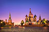

After 3 years in Corporate Travel Industry, I joined le Wagon :).
Click here!|  |
MoscouMoscow is the capital and most populous city of Russia, with 12.2 million residents within the city limits and million within the urban area. Moscow has the status of a Russian federal city. |
KazanKazan is the capital and largest city of the Republic of Tatarstan, Russia. With a population of 1,143,535, it is the sixth most populous city in Russia.[8] Kazan lies at the confluence of the Volga and Kazanka Rivers in European Russia. The Kazan Kremlin is a World Heritage Site. | |
ParisParis is the capital and most populous city in France, with an administrative-limits area of 105 square kilometres (41 square miles) and an official population of 2,206,488 (2015). |